Image
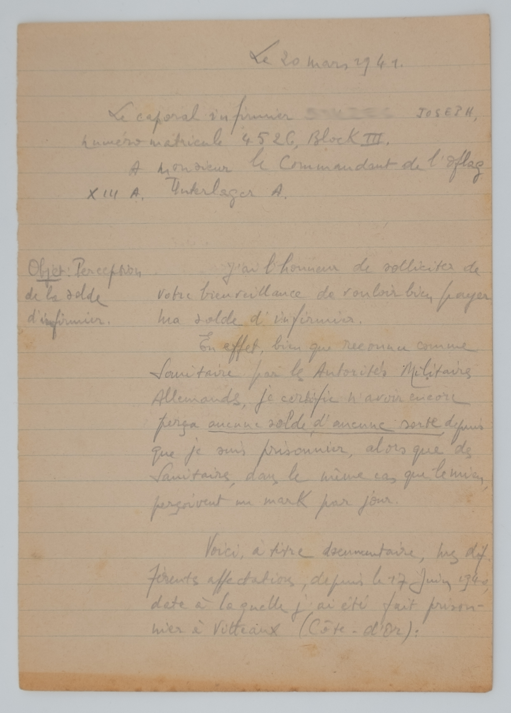") 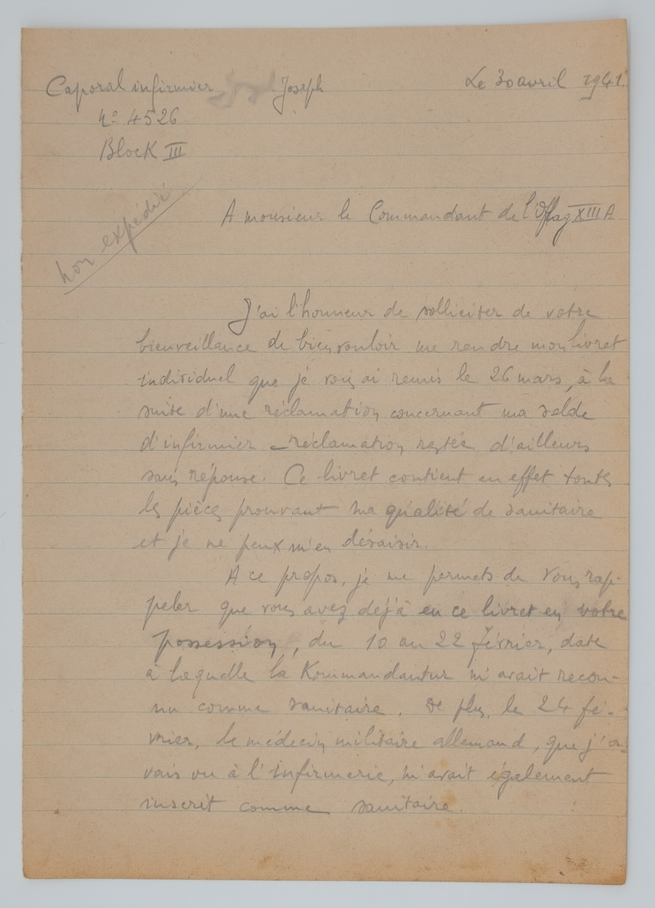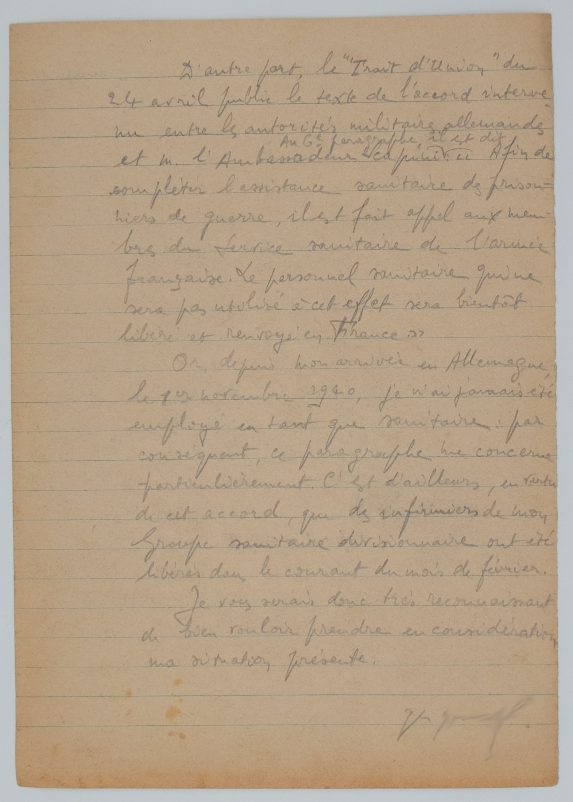
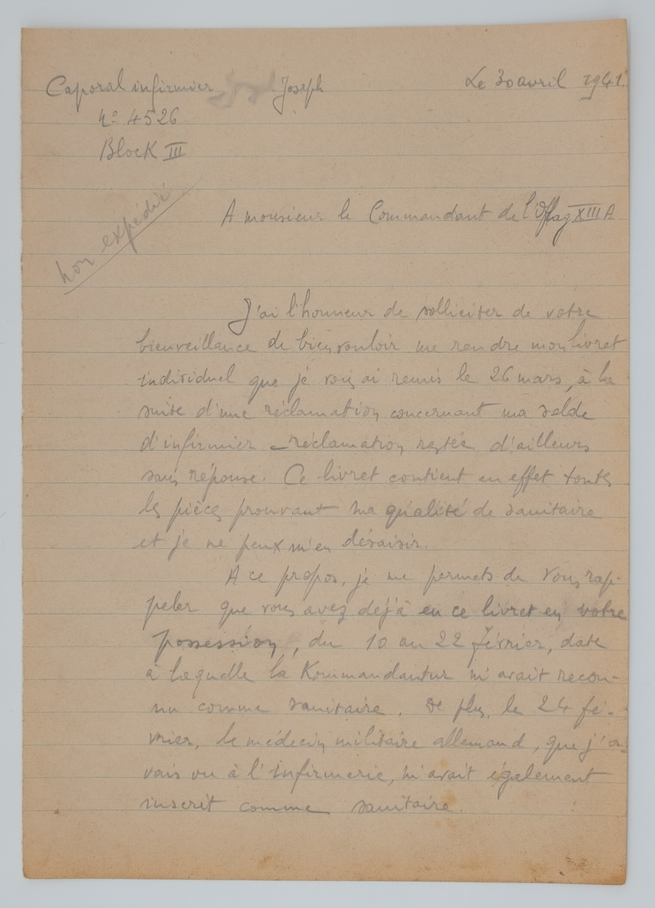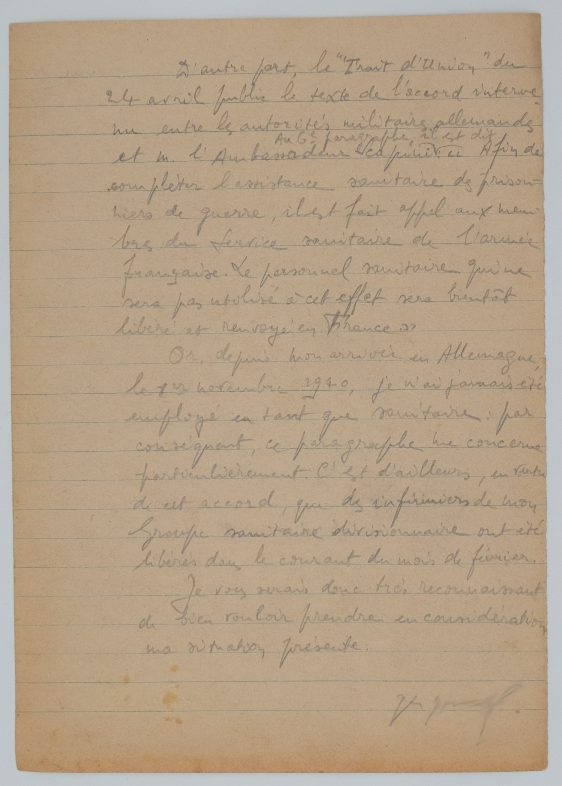")
") 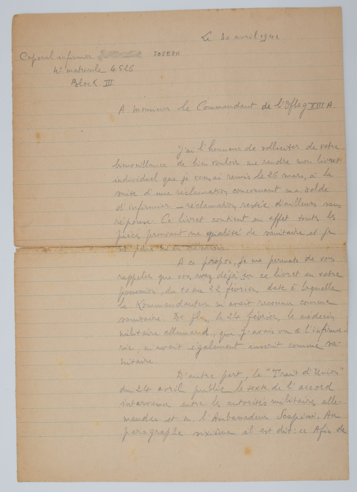
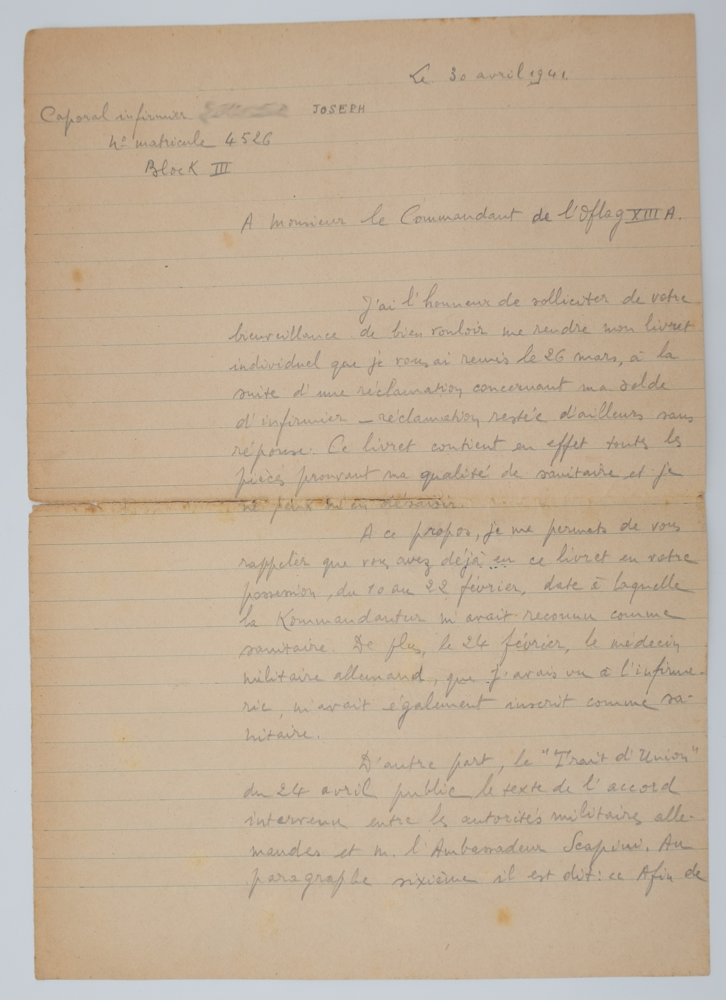")
")
") 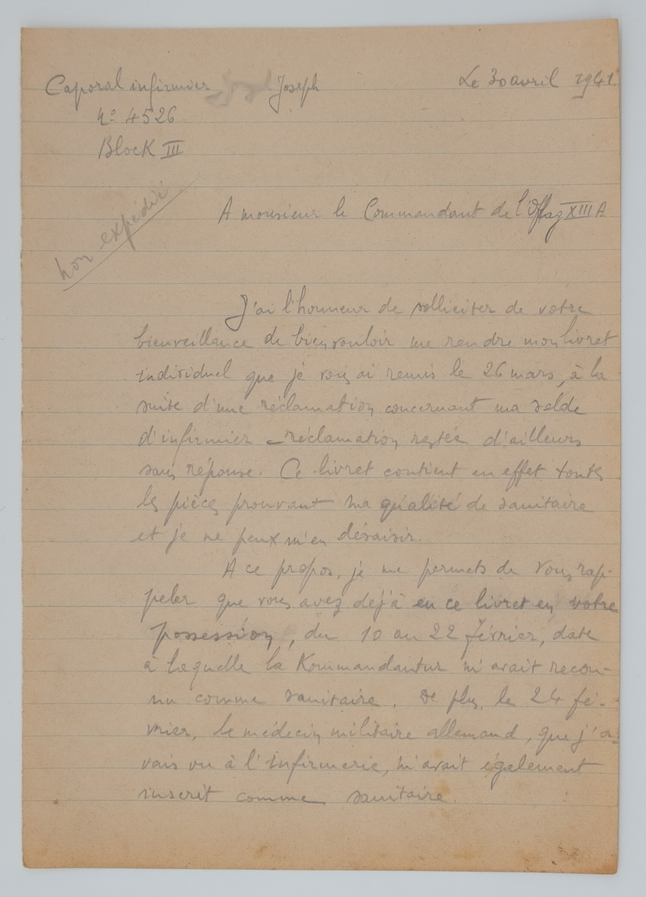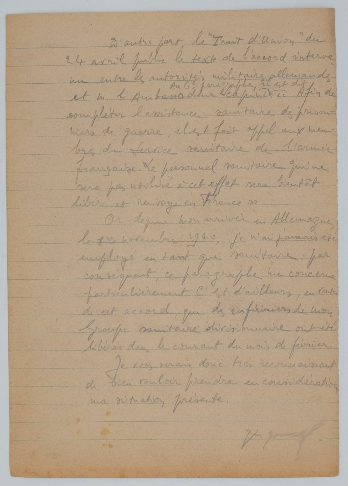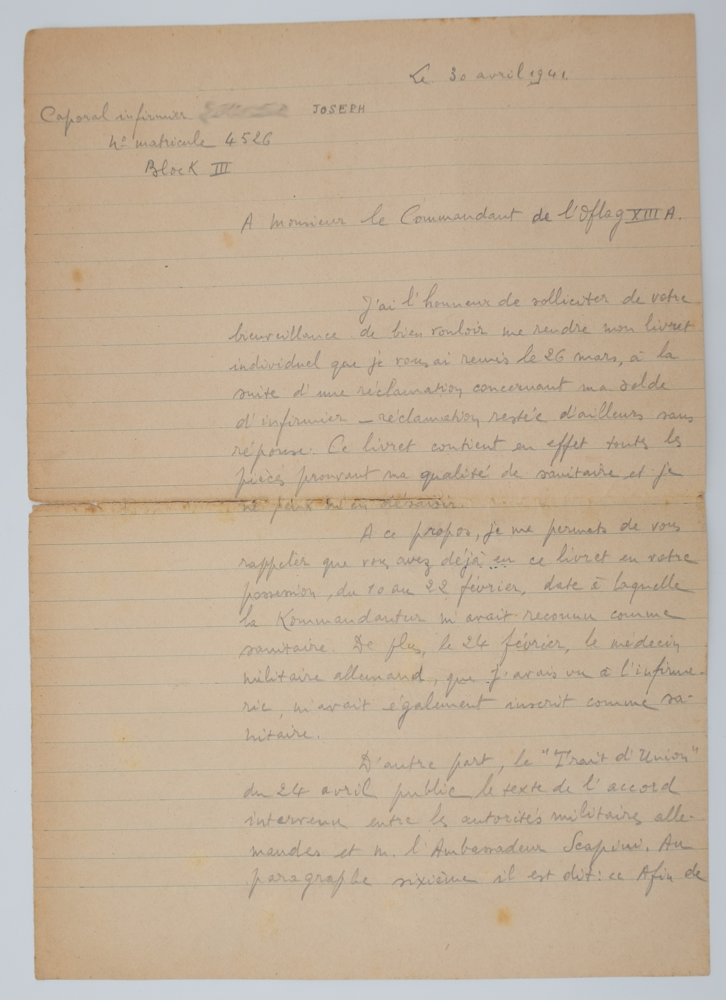
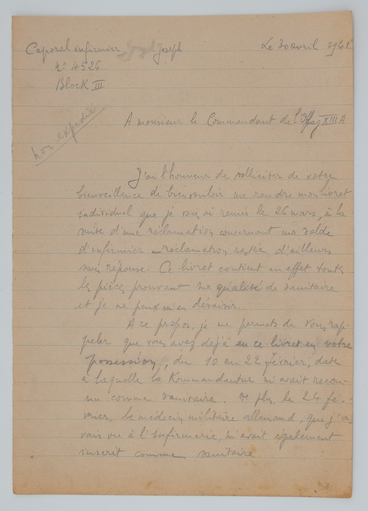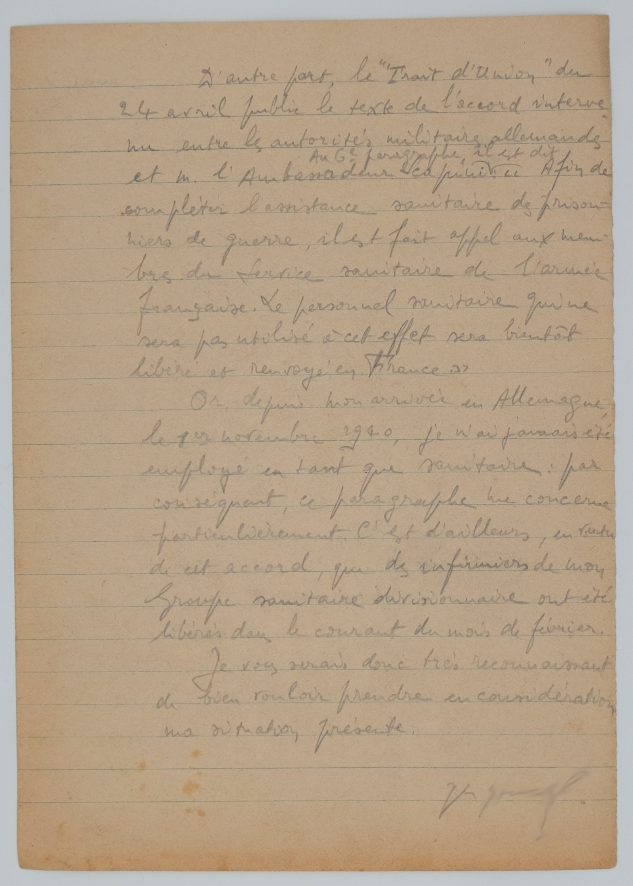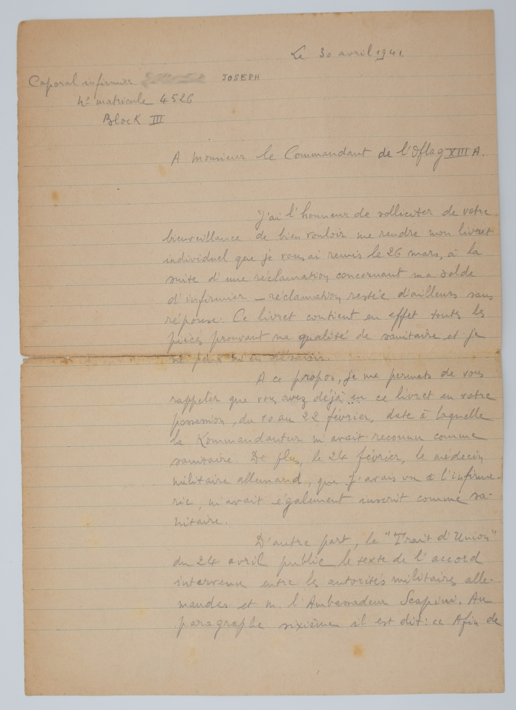Objet: Perception de la solde d'infirmier.
J’ai l’honneur de solliciter de
votre bienveillance de vouloir
bien payer
ma solde d’infirmier.
En effet, bien que reconnu comme
Sanitaire par les Autorités
Militaires
Allemandes, je certifie n’avoir encore
perçu aucune solde d’aucune sorte depuis
que je suis
prisonnier, alors que des
Sanitaires, dans le même cas que le mien,
perçoivent unmark par jour.
Voici à titre documentaire, mes dif
férentes affectations, depuis le 17 juin 1940
,date à laquelle j’ai été fait
prison-
nier à Vitteaux (Côte-d’Or):
Affecté à l’Hôpital d'
Avallon
(Yonne), comme infirmier à la salle
d’opérations, du
17 juin au19 juillet1940
Interné au camp de Cravant(Yonne), du 19 juillet au 22 octobre1940
Interné au camp de Saint-Florentin(Yonne), Frontstalag 150, du 22 octobre au 29 octobre1940
Dirigé sur l’Allemagnele 29 octobre :
A Grafenwöhr, du 1er au 7 novembre1940
A Eger (A.K. 34-31), du 7 au 27 novembre
A Weiden (Stalag XIII B), du 27 novembre au 11 janvier 194 1
A Nüruberg
(Oflag XIII A, Unterlager A), à partir du 11 Janvier 1941. jusqu'au 23 juillet 1941.
J’ai l’honneur de solliciter de votre
bienveillance de bien vouloir me rendre
mon livret
individuel que je vous ai remis le 26 mars, à la
suite
d’une réclamation concernant ma solde
d’infirmier – réclamation restée
d’ailleurs
sans réponse. Ce livret contient ne effet toutes
les pièces
prouvant ma qualité de sanitaire
et je ne peux m’en désaisir.
A ce propos, je me permets de vous rap-
peler que vous avez déjà eu ce
livret en votre
possession, du 10 au 22 février, date
à laquelle
la kommandantur m’avait recon-
nu comme sanitaire. De plus, le 24 fé-
vrier, le médecin militaire allemand,
que j’a-
vais vu à l’infirmerie, m’avait également
inscrit comme
sanitaire.
D’autre part, le Trait d’Union du
24
avril publie le texte de l’accord interve-
nu entre les autorités militaires
allemandes
et m. l’Ambassadeur Scapini: Au 6e paragraphe il est dit Afin de
compléter l’assistance sanitaire des prison-
niers de guerre, il est fait
appel aux mem-
bres du service sanitaire de l’armée
française. Le
personnel sanitaire qui ne
sera pas utilisé à cet effet sera bientôt
libéré et renvoyé en France.
Or, depuis mon arrivée en Allemagne,
le 1er novembre
1940, je n’ai jamais été
employé en tant que sanitaire : par
conséquent, ce paragraphe me concerne
particulièrement. C’est d’ailleurs,
en vertu
de cet accord, que des infirmiers de mon
groupe sanitaire
divisionnaire ont été
libérés dans le courant du mois de février.
Objet: Réclamation de livret individuel. J’ai
l’honneur de rappeler à
votre bienveillante attention que mon livret
indi-
viduel vous a été remis le 26 mars, à la suite
d’une
réclamation concernant ma solde d’in-
firmier. Si cela est possible, je
serais dési-
reux de rentrer en sa possession, car il con-
tient toutes les
pièces prouvant ma qualité
de Sanitaire.
A ce propos, je me permets de vous
rappeler que vous avez déjà eu ce livret
en votre possession, du 20 au 22 février,
date à laquelle la Kommandantur m’a-
vait reconnu comme Sanitaire. De plus
le 24
février, le médecin militaire alle-
mand, que j’avais vu à l’infirmerie,
m’avait également inscrit comme
Sanitaire.
C’est pourquoi, j’exprime à nouveau
mon respectueux étonnement de n’avoir
pas
encore été payé comme infirmier, alors
que les autres
Sanitaires, qui se trouvent
dans mon cas, perçoivent depuis longtemps
un
mark par jour.
Extrait de Paris-Soir, du 26/4/41,
Berlin, 20 avril
J’ai l’honneur de solliciter de votre
bienveillance de bien
vouloir me rendre mon livret
individuel que je vous ai remis le 26 mars, à
la
suite d’une réclamation concernant ma solde
d’infirmier – réclamation
restée d’ailleurs sans
réponse. Ce livret contient en effet toutes les
pièces prouvant ma qualité de sanitaire et je
ne peux m’en
désaisir.
A ce propos, je me permets de vous
rappeler que vous avez déjà eu
ce livret en votre
possession, du 10 au 22 février, date à laquelle
la
Kommandatur m’avait reconnu comme
sanitaire. De plus, le 24 février, le
médecin
militaire allemand, que j’avais vu à l’infirme-
rie, m’avait
également inscrit comme sanitaire.
D’autre part, le Trait
d’Union
du 24 avril publie le texte de
l’accord
intervenu entre les autorités militaires alle-
mandes et m.
l’Ambassadeur Scapini. Au paragraphe sixième il est dit : « Afin de
compléter l’assistance sanitaire des
prisonniers
de guerre, il est fait appel aux membres du
Service
sanitaire de l’armée française. Le
personnel sanitaire qui ne sera pas
utilisé à
cet effet sera bientôt libéré et renvoyé en France. »
Or depuis mon arrivée en -
, le 1er
novembre 1940, je n’ai jamais été
employé en tant que sanitaire : par
conséquent,
ce paragraphe me concerne particulièrement.
C’est d’ailleurs,
en vertu de cet accord, que
des infirmiers de mon groupe sanitaire
divi-
sionnaire ont été libérés dans le courant du
mois de février.
LES PRISONNIERS DE GUERRE DU M.-STAMM-
LAGER XIII A ADRESSENT AU
MARECHAL PE-
TAIN LEURS VOEUX TRES RESPECTUEUX A
L'OCCASION DE SON
ANNIVERSAIRE.
ILS LUI EXPRIMENT LEUR RECONNAISSANCE
EMUE POUR LA GENEREUSE
ATTENTION QU’IL
LEUR TEMOIGNE EN TOUTE CIRCONSTANCE
ET POUR TOUS SES
EFFORTS EN VUE D’ADOU-
CIR, MORALEMENT ET MATERIELLEMENT, LEUR
CAPTIVITE.
GARDANT UNE CONFIANCE INEBRANLABLE
DANS LES DESTINEES DE LA FRANCE ETER-
NELLE, ILS L’ASSURENT DE LEUR FILIAL AT-
TACHEMENT.